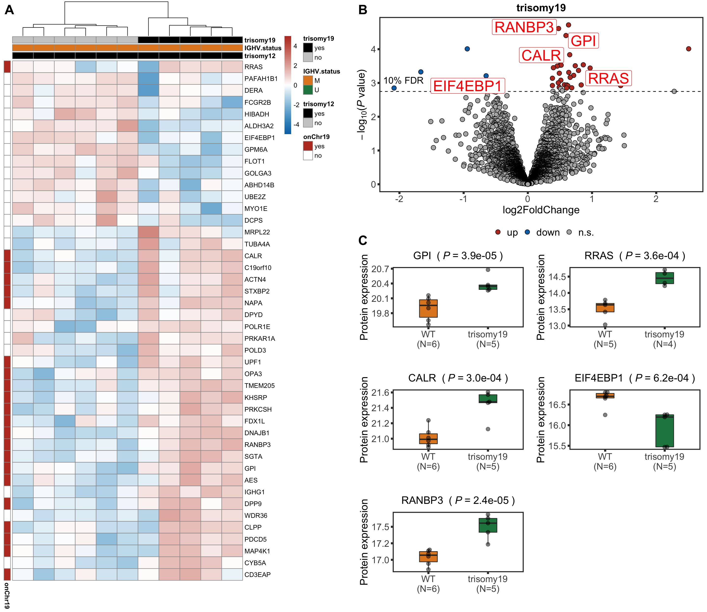

Main text figure 3
plot_grid(tri19Heatmap,
plot_grid(tri19Volcano, tri19Box,ncol=1,rel_heights = c(0.4,0.6),
labels = c("B","C"), label_size = 20, vjust = c(1.5, 0)),
ncol=2,labels = c("A",""), label_size = 20)
sessionInfo()R version 3.6.0 (2019-04-26)
Platform: x86_64-apple-darwin15.6.0 (64-bit)
Running under: macOS 10.15.6
Matrix products: default
BLAS: /Library/Frameworks/R.framework/Versions/3.6/Resources/lib/libRblas.0.dylib
LAPACK: /Library/Frameworks/R.framework/Versions/3.6/Resources/lib/libRlapack.dylib
locale:
[1] en_US.UTF-8/en_US.UTF-8/en_US.UTF-8/C/en_US.UTF-8/en_US.UTF-8
attached base packages:
[1] grid parallel stats4 stats graphics grDevices utils
[8] datasets methods base
other attached packages:
[1] piano_2.2.0 latex2exp_0.4.0
[3] forcats_0.5.0 stringr_1.4.0
[5] dplyr_1.0.0 purrr_0.3.4
[7] readr_1.3.1 tidyr_1.1.0
[9] tibble_3.0.3 tidyverse_1.3.0
[11] ggbeeswarm_0.6.0 ComplexHeatmap_2.2.0
[13] pheatmap_1.0.12 cowplot_1.0.0
[15] ggraph_2.0.3 ggplot2_3.3.2
[17] igraph_1.2.5 tidygraph_1.2.0
[19] DESeq2_1.26.0 SummarizedExperiment_1.16.1
[21] DelayedArray_0.12.3 BiocParallel_1.20.1
[23] matrixStats_0.56.0 Biobase_2.46.0
[25] GenomicRanges_1.38.0 GenomeInfoDb_1.22.1
[27] IRanges_2.20.2 S4Vectors_0.24.4
[29] BiocGenerics_0.32.0 limma_3.42.2
loaded via a namespace (and not attached):
[1] shinydashboard_0.7.1 tidyselect_1.1.0 RSQLite_2.2.0
[4] AnnotationDbi_1.48.0 htmlwidgets_1.5.1 maxstat_0.7-25
[7] munsell_0.5.0 codetools_0.2-16 DT_0.14
[10] miniUI_0.1.1.1 withr_2.2.0 colorspace_1.4-1
[13] knitr_1.29 rstudioapi_0.11 ggsignif_0.6.0
[16] labeling_0.3 git2r_0.27.1 slam_0.1-47
[19] GenomeInfoDbData_1.2.2 KMsurv_0.1-5 polyclip_1.10-0
[22] bit64_0.9-7 farver_2.0.3 rprojroot_1.3-2
[25] vctrs_0.3.1 generics_0.0.2 TH.data_1.0-10
[28] xfun_0.15 sets_1.0-18 R6_2.4.1
[31] clue_0.3-57 graphlayouts_0.7.0 locfit_1.5-9.4
[34] fgsea_1.12.0 bitops_1.0-6 assertthat_0.2.1
[37] promises_1.1.1 scales_1.1.1 multcomp_1.4-13
[40] nnet_7.3-14 ggExtra_0.9 beeswarm_0.2.3
[43] gtable_0.3.0 sandwich_2.5-1 workflowr_1.6.2
[46] rlang_0.4.7 genefilter_1.68.0 GlobalOptions_0.1.2
[49] splines_3.6.0 rstatix_0.6.0 acepack_1.4.1
[52] broom_0.7.0 checkmate_2.0.0 yaml_2.2.1
[55] abind_1.4-5 modelr_0.1.8 crosstalk_1.1.0.1
[58] backports_1.1.8 httpuv_1.5.4 Hmisc_4.4-0
[61] relations_0.6-9 tools_3.6.0 ellipsis_0.3.1
[64] gplots_3.0.4 RColorBrewer_1.1-2 Rcpp_1.0.5
[67] visNetwork_2.0.9 base64enc_0.1-3 zlibbioc_1.32.0
[70] RCurl_1.98-1.2 ggpubr_0.4.0 rpart_4.1-15
[73] GetoptLong_1.0.2 viridis_0.5.1 zoo_1.8-8
[76] haven_2.3.1 ggrepel_0.8.2 cluster_2.1.0
[79] exactRankTests_0.8-31 fs_1.4.2 magrittr_1.5
[82] data.table_1.12.8 openxlsx_4.1.5 circlize_0.4.10
[85] survminer_0.4.7 reprex_0.3.0 mvtnorm_1.1-1
[88] shinyjs_1.1 hms_0.5.3 mime_0.9
[91] evaluate_0.14 xtable_1.8-4 XML_3.98-1.20
[94] rio_0.5.16 jpeg_0.1-8.1 readxl_1.3.1
[97] gridExtra_2.3 shape_1.4.4 compiler_3.6.0
[100] KernSmooth_2.23-17 crayon_1.3.4 htmltools_0.5.0
[103] mgcv_1.8-31 later_1.1.0.1 Formula_1.2-3
[106] geneplotter_1.64.0 lubridate_1.7.9 DBI_1.1.0
[109] tweenr_1.0.1 dbplyr_1.4.4 MASS_7.3-51.6
[112] jyluMisc_0.1.5 Matrix_1.2-18 car_3.0-8
[115] cli_2.0.2 marray_1.64.0 gdata_2.18.0
[118] km.ci_0.5-2 pkgconfig_2.0.3 foreign_0.8-71
[121] xml2_1.3.2 annotate_1.64.0 vipor_0.4.5
[124] XVector_0.26.0 drc_3.0-1 rvest_0.3.5
[127] digest_0.6.25 fastmatch_1.1-0 rmarkdown_2.3
[130] cellranger_1.1.0 survMisc_0.5.5 htmlTable_2.0.1
[133] curl_4.3 shiny_1.5.0 gtools_3.8.2
[136] rjson_0.2.20 nlme_3.1-148 lifecycle_0.2.0
[139] jsonlite_1.7.0 carData_3.0-4 viridisLite_0.3.0
[142] fansi_0.4.1 pillar_1.4.6 lattice_0.20-41
[145] fastmap_1.0.1 httr_1.4.1 plotrix_3.7-8
[148] survival_3.2-3 glue_1.4.1 zip_2.0.4
[151] png_0.1-7 bit_1.1-15.2 ggforce_0.3.2
[154] stringi_1.4.6 blob_1.2.1 latticeExtra_0.6-29
[157] caTools_1.18.0 memoise_1.1.0